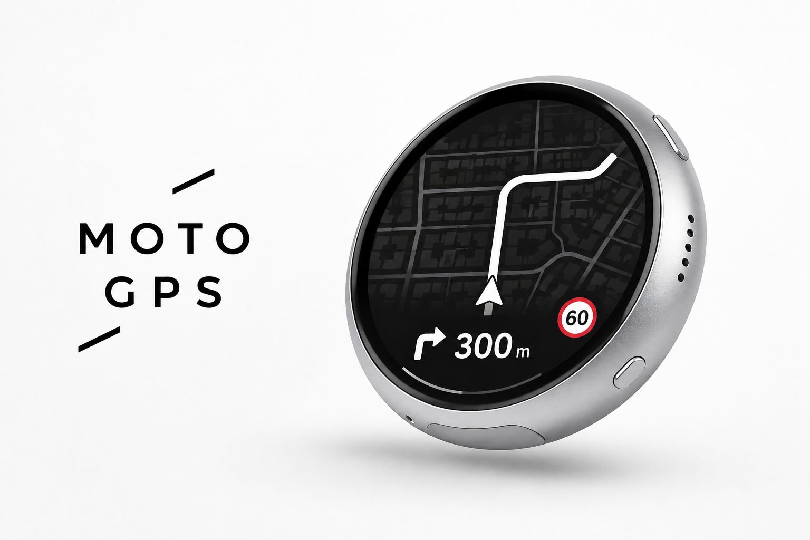
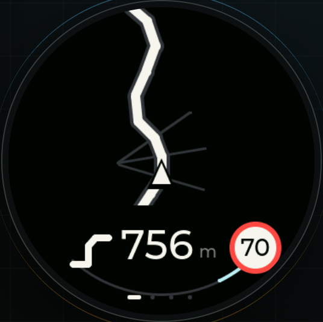
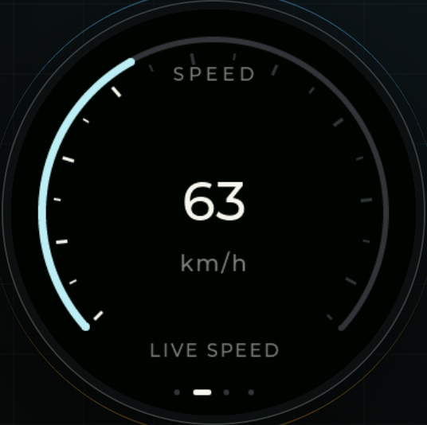
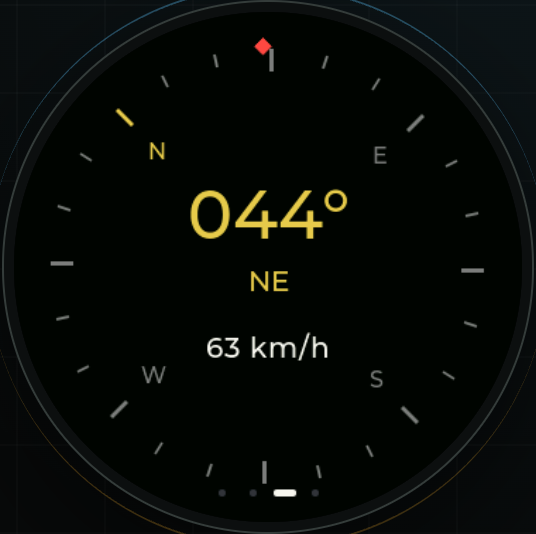
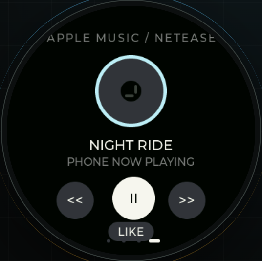

在 iPhone 上选好目的地。
选好目的地。
选一条想走的路。
搜索地点，比较最多三条候选路线的时间和距离，再点击开始。界面采用熟悉的原生列表、地图和系统导航。

微雪 + iPhone · 开发测试中
在 iPhone 上选好路线，把转向、距离和周边道路交给车把上的小圆屏。每次出发，少一点翻找。
原生 iOS App · 蓝牙连接 · 在线地图与离线兜底

一次出发，两个搭档
iPhone 负责定位、搜索和路线规划；圆屏通过蓝牙接收显示内容。当前围绕微雪 1.75 英寸 AMOLED 开发板与原生 iOS App 持续验证。
搜索地点，比较最多三条候选路线的时间和距离，再点击开始。界面采用熟悉的原生列表、地图和系统导航。
转向指引、当前速度、行进航向与 Apple Music 控制。在同一块小屏幕里，按需要切换。




圆屏界面演示，数字为示例。限速尚未接通；停车时的绝对北向仍待标定验证。
地图，跟着旅程走
周边道路和建筑，不再只为济南准备。默认在线加载，也可以在出发前把需要的范围存下来。
导航中按位置获取周边底图，并保留已加载内容。网络不可用时，使用已有缓存或下载地图。
在 App 搜索城市或区县，查看范围后下载。换城市不需要修改程序；范围过大时可改选区县。
先选好路线，再下载路线周边的地图。下载支持暂停与继续，共用的地图内容只保存一份。
离线保存的是道路与建筑底图。地点搜索、新路线规划、偏航重算和实时路况仍需要网络；覆盖完整程度取决于当地地图数据。

开始使用
当前仍为开发测试版，尚无公开 App Store 或 TestFlight 下载链接。开发者可从 GitHub 获取源码与构建说明。
iPhone 安装测试 App，微雪开发板使用匹配的 MOTO GPS 固件。允许蓝牙，保持圆屏开机并靠近手机。
允许定位，搜索并选择目的地。跨市或前往信号较弱的区域前，提前保存沿途底图。
检查连接与定位，或先用“演示导航”熟悉流程。确认圆屏同步正常后开始，途中停车再操作手机。
重整目的地搜索、路线选择、设备管理和地图下载入口，支持系统深色模式与动态字体。
默认在线加载，新增城市／区县与沿途下载、暂停续传、共享缓存和存储清理。
发布构建、隐私清单和测试说明已经准备；尚未上传并开放测试，也没有可用的邀请链接。
持续验证后台定位、反复断连、弱网和耗电。红绿灯读秒、真实道路限速、圆屏分段拥堵配色仍待完善。
你可能也想知道
从怎样连接，到地图能做什么，把容易困惑的地方放在这里。
目前是开发测试项目，尚未公开销售成品，也没有 App Store 或 TestFlight 邀请链接。可以从 GitHub 查看源码、硬件需求和构建说明；这里的外观图是概念示意。
可以。App 的搜索、路线预览、地图管理和“演示导航”可以在没有圆屏时使用。演示中的位置和行驶过程是模拟的；它先尝试在线获取固定路线，失败后使用内置路线。圆屏的实际显示与触摸需要对应硬件验证。
不需要。手机与圆屏通过蓝牙通信，手机自己用 Wi-Fi 或蜂窝网络获取在线服务。给 App 安装更新时使用的电脑连接，与日常骑行的蓝牙连接是两回事。
不需要。周边地图默认在线获取；也可以进入“地图与离线下载”，搜索常用城市或区县并保存。跨市时先规划路线，再下载“这条路线周边”。范围太大时可选择较小区县。道路和建筑覆盖取决于当地数据。
下载包保存的是周边道路和建筑，方便断网时显示已有底图。地点搜索、规划新路线、偏航重算及实时路况仍需要网络。它目前不是完整的离线路线引擎。
回到地图页面，在未完成的下载包上选择继续，已有有效内容会复用。可以删除下载包或清理自动缓存。自动缓存和手动下载均有容量限制；多个区域共用的地图只保存一份。
目前没有接入红绿灯实时倒计时和可信的当前道路限速。路线服务能返回部分路况信息，但未知或过期状态的处理、圆屏按路段显示拥堵颜色仍在完善。请以实际道路标志和现场交通情况为准，演示数字不代表实时道路数据。
不能保证。当前使用高德普通驾车路线，不能保证覆盖各地的摩托车禁限行规则。选择路线时需要结合当地规定与道路标志判断。
原生 App 使用后台定位和蓝牙支持已开始的导航；需要相应系统权限，长时间与复杂场景仍在验证。连接异常时，检查圆屏固件、电源与蓝牙权限，靠近手机并仅开启一台测试圆屏，再在设备页尝试重新连接。网页调试版不能可靠地在锁屏后继续定位。
当前优先支持 iPhone，尚无 Android App。音乐控制针对系统 Apple Music，支持上一首、播放／暂停和下一首，不是所有音乐 App 的通用遥控器。指南针当前以行进航向为主，停车绝对北向仍需后续传感器与标定验证。
自研 B1 主板保留为工程候选，目前优先完善微雪配套 App，外壳与安装结构也暂缓。后续根据微雪版本的实际限制，再评估是否继续。
联网搜索和路线请求会经项目服务交给高德；请求地图也会透露查看区域。服务器访问日志可能记录 IP、搜索词和位置参数。最近地点、配对记录和地图下载保存在手机；音乐信息通过蓝牙发往圆屏。App 的“隐私与数据”说明了这些用途与清理方式。
测试者安装 TestFlight 和参与测试免费，但开发者分发 App 需要 Apple Developer Program 会员与相应审核。当前项目尚未开放 TestFlight 测试，公开入口准备好后会在这里更新。
没有找到匹配的问题。试试“地图”“连接”或“下载”，也可以在 GitHub 提问。
MOTO GPS
这是一个仍在成长的项目。欢迎阅读源码、复现问题，
和我们一起把圆屏骑行导航做得更好用。